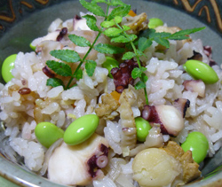

タコとホタテの炊き込みごはん
- 調理時間：60 分
- （一人当たり）
- カロリー：367kcal
- たんぱく質：14.8g
- 脂質：2.4g
- 塩分：1.3g


＜４人分＞
- 米
- 2カップ
- 雑穀ブレンド
- 大さじ3
- ゆでタコ
- 100g
- ホタテ
- 50g
- ゴボウ
- 80g
- レンコン
- 80g
トマトソース
- ニンジン
- 50g
- ショウガ
- 1片
- 枝豆（ゆで）
- 適量
- 塩
- 小さじ2/3
- 醤油
- 小さじ1


- タコは薄切りにする。ホタテは塩水でサッと洗う。ゴボウはささがきにして水にさらす。レンコンはイチョウ切り。ニンジンは細切り。ショウガは千切りにする。
- 米は洗い、ザルにあげて一旦水気を切る。
- 炊飯器に米、雑穀、分量の水を入れる。
- ①の材料、塩、醤油を加え、炊く。
- 炊き上がったごはんに枝豆を混ぜ合わせる。
タコとホタテの炊き込みごはん
国産で主に食べられているタコは「まだこ」という種類です。
タコの旬は、瀬戸内海や九州地方などの関西では夏のものとされ、夏至より数えて１１日目の半夏生にタコを食べる風習があります。これは麦が実る７月ごろにタコがおいしくなることや、田植えが終わった時期に稲の根がタコの足のように大地にしっかり根づくようにという願いが込められています。一方、関東では、お正月のお節料理に酢ダコを入れることが多く、タコは冬のものと考えられていることもあるようです。
タコは低脂肪、高たんぱく質で亜鉛とタウリンが多く含まれています。タウリンはアミノ酸の一種でコレステロールや血圧を正常に保つ働きが取り上げられますが、夏に注目すべき働きは疲労回復や肝機能の強化です。暑さは体力を奪い、夏は疲労を溜め込みやすい季節です。賢く食べて元気な夏を向かえましょう